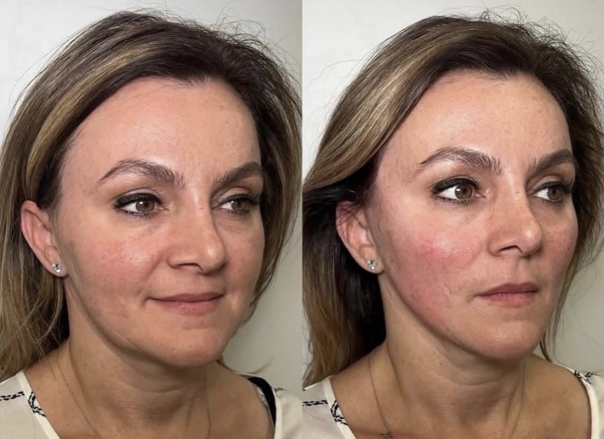
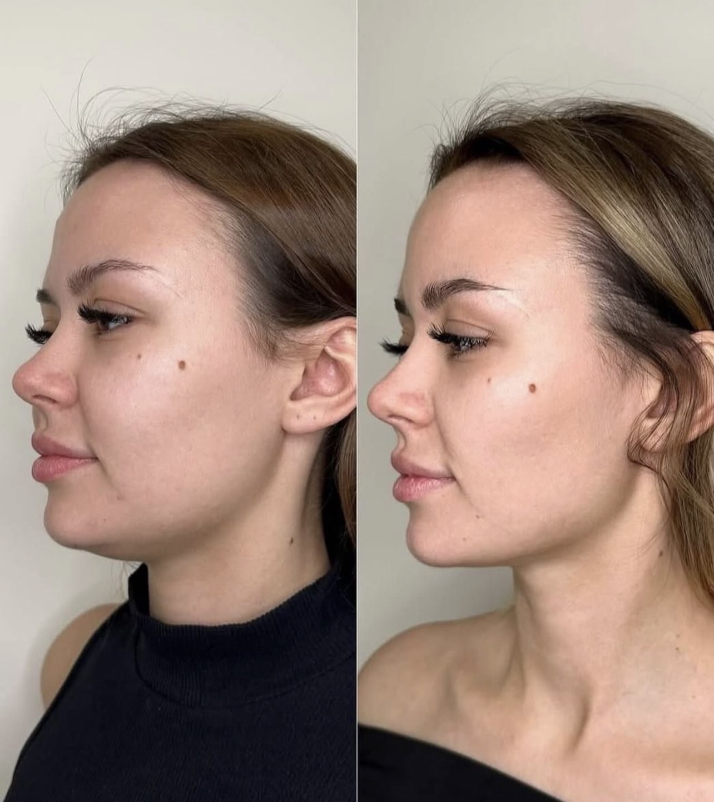
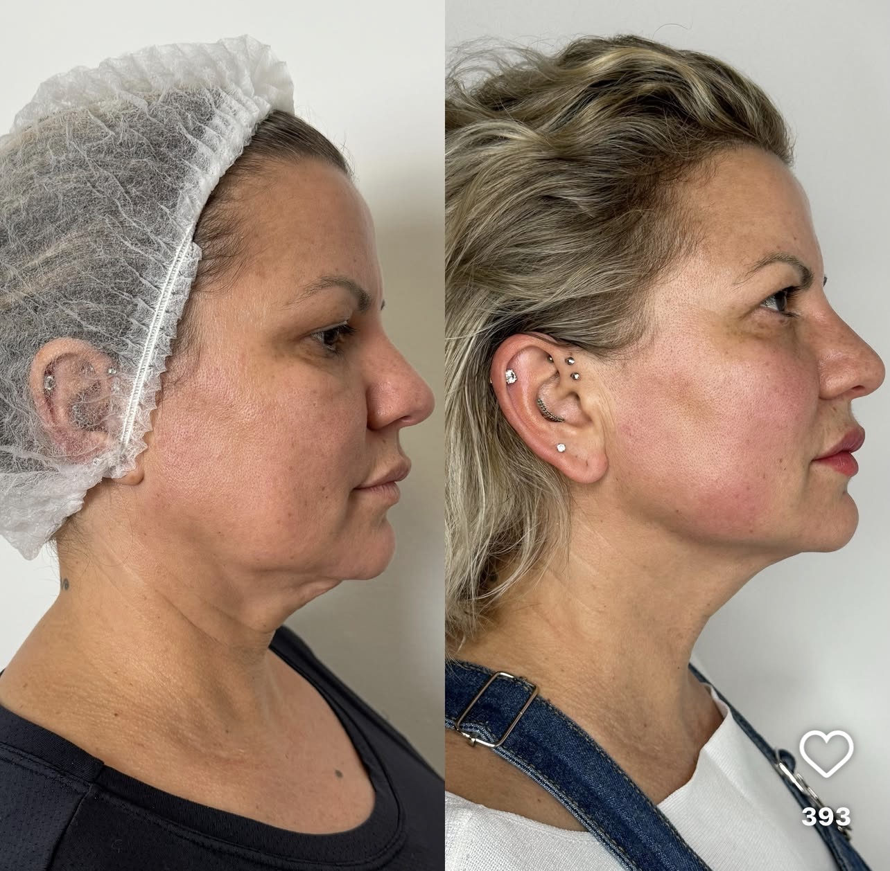
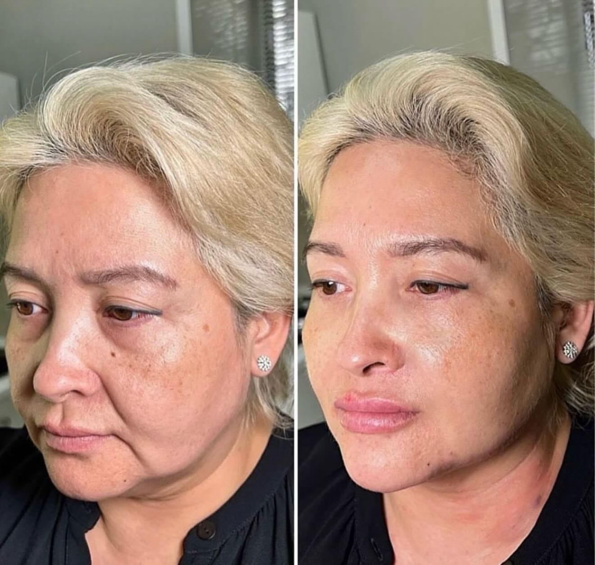

Endolaser
Lift. Tighten. Sculpt. Refresh.
An advanced non-surgical lift for the jowls, jawline, neck and double chin — tightening and sculpting from within.
Not sure if it's right for you? Message us on WhatsApp — we'll happily answer your questions, no pressure.
Performed by a trained, insured practitioner · Leyton, London
Looking in the mirror and noticing…
- Jowls that weren't there before
- A softer jawline
- Loose skin beneath the chin
- A heavier lower face
- A neck that no longer feels defined
You don't necessarily need surgery. You may simply need tighter skin, stronger collagen and a more defined contour.
Endolaser is one of the most advanced non-surgical lifting treatments available today. Using a hair-fine laser fibre placed beneath the skin, it works where ageing actually happens — stimulating collagen, tightening tissue and refining facial contours from within.
Why clients love Endolaser
Lift & tighten
Improve skin laxity around the jawline, jowls and neck.
Define your jawline
Create a sharper, more sculpted lower face.
Reduce a double chin
Target stubborn pockets of fat beneath the chin.
Stimulate new collagen
Your skin continues to improve for months after treatment.
Natural results
You still look like you — just fresher, firmer and more defined.
Real results
Before & after transformations — jawline definition, jowl reduction, neck tightening, double chin improvement and mid-face lift.




Individual results vary from person to person. A consultation is required to confirm suitability.
Wondering if it's right for you?
That's exactly what a consultation is for — a relaxed, no-obligation chat where we assess your skin, talk through your goals, and give you honest advice. There's never any pressure to go ahead.
Prefer to ask first? Message us on WhatsApp ›
The Endolaser difference
Most skin-tightening treatments work from the outside. Endolaser works from the inside. A fine optical fibre is gently introduced beneath the skin and delivers controlled laser energy directly into the tissues responsible for support and structure.
This allows Endolaser to
- Tighten existing collagen
- Stimulate new collagen
- Improve skin quality
- Refine contours
- Reduce small pockets of unwanted fat
The result? A face that appears firmer, tighter and more youthful — without looking "done."
Is Endolaser right for me?
You may be a good candidate if you have
- Mild to moderate skin laxity
- Early jowls
- A soft jawline
- Loose neck skin
- A fuller double chin
- Mild facial sagging
- Good general health
- Realistic expectations
It may not be suitable if you
- Are pregnant or breastfeeding
- Have an active infection
- Have severe laxity better suited to surgery
- Have certain medical conditions
A consultation will determine suitability, and treatment may be declined if it is not safe or appropriate.
What can Endolaser treat?
Face & neck
- Jawline
- Jowls
- Double chin
- Neck
- Lower face
- Mid face
- Under-eye area
- Nasolabial folds
- Marionette lines
Body
- Arms
- Abdomen
- Inner thighs
- Knees
- Flanks
- Mild skin laxity
What happens during treatment?
Consultation
We assess your skin, facial structure and goals before creating a personalised treatment plan.
Preparation
The area is cleansed and local anaesthetic is used to keep you comfortable.
Treatment
The laser fibre is carefully guided beneath the skin. Most clients describe the sensation as warmth, pressure or mild pulling rather than pain.
Recovery
You go home the same day. No hospital stay, no stitches, no general anaesthetic.
Recovery at a glance
Day 1–3
Swelling, tightness and mild bruising.
Week 2
Most visible healing complete.
Month 1
Early tightening visible.
Month 3
Collagen production accelerating.
Month 6
Peak results visible.
Up to 12 months
Continued collagen remodelling.
Risks & side effects
Endolaser is generally well tolerated, but it is a minimally invasive procedure and all treatments carry risk. We explain everything fully at your consultation.
Common & temporary
- Swelling
- Bruising
- Tenderness
- Redness
- Tightness
- Temporary numbness
- Mild firmness
Less common / rare
- Infection
- Burns / blistering
- Pigment changes
- Nerve irritation
- Prolonged numbness
- Lumps or nodules
- Asymmetry / contour irregularity
- Unsatisfactory result / further treatment
Why choose Layali Clinic?
A personalised approach
No two faces age the same way. Every treatment is planned specifically around your facial anatomy, skin quality, degree of laxity and desired outcome.
Honest recommendations
If we believe another treatment would achieve a better result, we'll tell you.
Ongoing support
From consultation to recovery, we're here every step of the way.
Pricing
Tap any treatment to choose your date & time and pay
Body contouring
Not ready to book? Ask us anything on WhatsApp ›
Frequently asked questions
Will it look natural?
Yes. The aim isn't to change your face — it's to restore definition and tighten existing tissues, so you look fresher and firmer rather than "done."
Does it hurt?
Most clients find it very manageable with local anaesthetic — you may feel warmth, pressure or mild pulling.
Is it better than HIFU?
For many clients with more noticeable laxity, Endolaser can give a more significant result because it works beneath the skin rather than from the surface.
How long do results last?
Typically 1–3 years depending on age, lifestyle and skin quality. Maintenance may be recommended over time.
Will I need more than one session?
Many clients achieve a visible improvement from one session; some may need a second depending on skin laxity, area and desired result.
Is it a facelift alternative?
It can be an excellent option for clients not yet ready for surgery, though it won't replicate a surgical facelift in cases of severe laxity.
Ready to see if Endolaser is right for you?
Book a relaxed, no-obligation consultation — we'll assess your concerns, explain your options and create a personalised treatment plan. You're never under any pressure to proceed.
Or simply message us on WhatsApp — we'd love to help you decide.
Layali Clinic · Leyton, London · 07787 708200
Layali Clinic · Leyton, London · 07787 708200 · info.lushlips@gmail.com · Privacy Notice